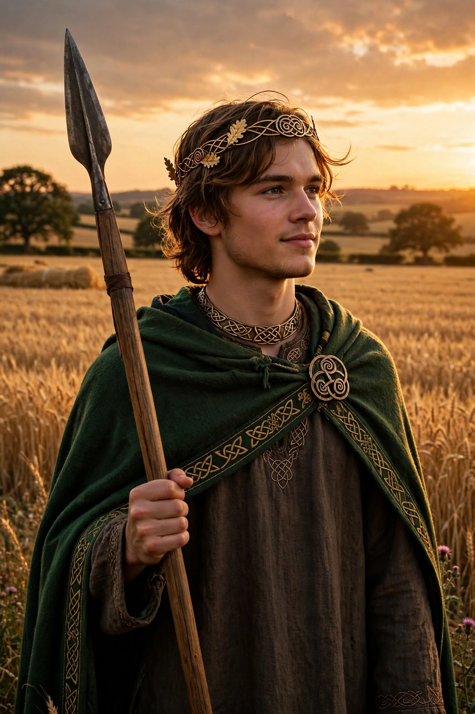

From Wikipedia, the free encyclopedia
| Lugh | |
|---|---|
| Affiliation | Irish mythology; god of skill, kingship, light and the harvest |
| People | Tuatha Dé Danann |
| Father/mother | Cian of the Tuatha Dé; Ethniu, daughter of Balor of the Fomorians |
| Son | Cú Chulainn |
| Festival | Lughnasadh (1 August) |
| Weapons | The invincible spear; the sling that killed Balor |

Lugh (Old Irish Lug, Welsh Lleu) is a major god of Irish mythology, master of every art and craft — the Samildánach, "the many-skilled" — who led the Tuatha Dé Danann to victory over the Fomorians at the Second Battle of Moytura and killed his own grandfather, the tyrant Balor, with a sling-stone through his poisonous eye. His festival, Lughnasadh (1 August), the harvest feast he founded in memory of his foster-mother Tailtiu, was celebrated in Ireland into living memory, and his name survives in place-names from Louth to Lyon (Lugdunum, "Lugh's fort") and in his Welsh counterpart Lleu Llaw Gyffes.
The great set-piece of his arrival: at the gate of Tara the doorkeeper refuses him entry unless he has a skill the king needs; Lugh names craft after craft — smith, champion, harper, poet, sorcerer, physician, cupbearer, brazier — and for each is told the court has one already. "Then ask the king," says Lugh, "whether he has one man who possesses all these skills together" — and he is admitted, and wins the seat of the sage. In the battle that follows he circles the army on one foot with one eye closed, chanting the incantation that raises their courage, and faces Balor, whose venomous eye, lifted by four servants, kills all it sees: Lugh's sling-stone drove the eye through the back of Balor's head, so that its gaze destroyed the Fomorian ranks behind him — fulfilling the prophecy that Balor would fall by his grandson's hand.
Lugh is the father of Cú Chulainn, appearing in the Táin to heal his son and fight in his place for three days. Celticists compare him with the Gaulish Lugus and debate the older theory that he was a sun god; the modern reading stresses kingship, craft and the assembly. His games at Tailtiu — races, marriages, markets — pattern the Irish fair to this day, and Lughnasadh remains one of the four great fire festivals of the Irish year, kept by tradition and revived by modern Pagans.
Celtic mythology · Brigid · The Morrigan · Cú Chulainn · Mythology